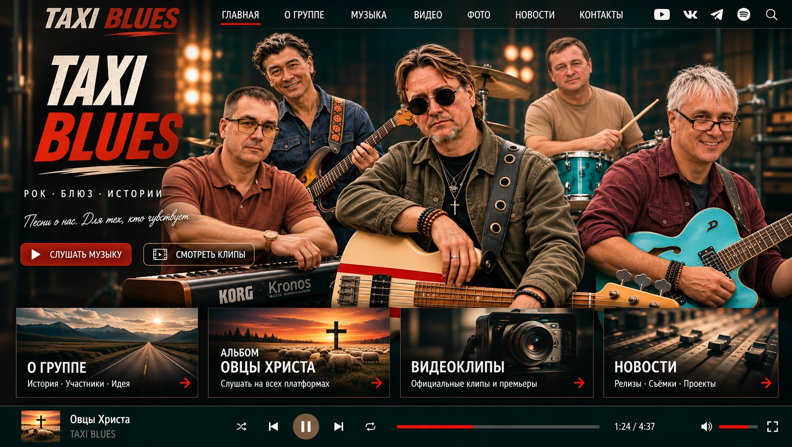
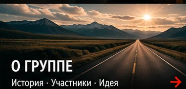

Не просто песни.
Истории, которые остаются.
TAXI BLUES — музыкальный проект, в котором рок и блюз встречаются с историями о жизни, чувствах и выборе.
Здесь нет случайной музыки: каждой песне — собственное настроение, каждому клипу — своя история.

ХРИСТААЛЬБОМ
Альбом
Овцы Христа
Это альбом о человеке в мире, который стал одновременно абсурдным, жестоким и равнодушным.
Здесь человек сталкивается с толпой, страхом, одиночеством, ложными обещаниями и собственной внутренней тенью. Одни принимают правила и идут вслед за стадом, другие теряются в толпе, третьи пытаются вырваться, поднять паруса и сохранить в себе способность чувствовать.
Через чёрный юмор, гротеск, тревогу и личные трагедии песни говорят об одном: взрослея, человек всё чаще оказывается один на один с миром, в котором слишком легко потерять себя.
Но альбом не заканчивается полной тьмой. За страхом остаётся свет, за падением — возможность движения, а за тяжёлой дорогой — восхождение.
Это история о потерянном человеке, который пытается понять, кем он стал, где его место и есть ли ещё дорога домой.
Песни альбома
Список песен и собственный аудиоплеер появятся здесь по мере добавления треков. Пока альбом можно слушать на музыкальных площадках.
TAXI BLUES / Видео
Овцы Христа
Официальный клип на YouTube. Откройте здесь в проигрывателе или перейдите на канал.
Лица TAXI BLUES
Фотографии участников группы. Нажмите на фотографию, чтобы рассмотреть её крупнее.
Фотогалерея
Портреты участников и утверждённая обложка сайта.
Следите за
новыми историями.
Анонсы премьер, новых песен и клипов появятся здесь после подтверждения группой. Пока самые актуальные публикации можно найти в сообществе TAXI BLUES.
Перейти в VKУслышимся
на музыкальных волнах.
Официальные страницы и ссылки для прослушивания TAXI BLUES.